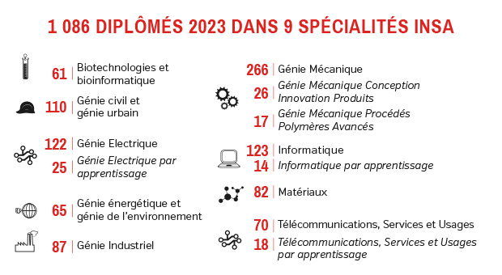

Après un BUT informatique,intégrer une école d'ingénieurs est une excellente option pour obtenir un titre d'ingénieur et accéder à des postes à responsabilités.Ces écoles offrent une formation approfondie,alliant théorie,pratique et souvent une forte ouverture internationale.
INSA Lyon
L’INSA Lyon, première école d’ingénieurs post-bac en France, accueille chaque année une grande diversité d’étudiants parmi les meilleurs bacheliers. Sa formation en 5 ans, alliant excellence académique et ouverture au monde, assure une insertion rapide sur le marché du travail. Forte de ses valeurs de diversité, d’innovation et d’engagement, l’école propose une vie associative dynamique et entretient des liens étroits avec les entreprises. Son ambition : devenir l’une des 10 meilleures écoles d’ingénieurs en Europe et un centre de recherche reconnu à l’international.
Formation accessible

pour plus d'informations, rdv sur le site officiel de L'INSA de Lyon
INSA LYONCes ressources vidéo sont aussi disponibles pour vous